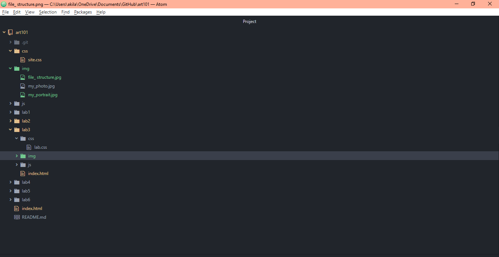

Lab 3: File Structures
For this lab I was ment to use the index.html of my art 101 file to create the homepage to all my projects and link them to that said homepage.
Challenges
The challenges that I faced through out lab 3 was on how to properly link all my projects to the homepage. I also struggled a bit with adding the photo as I was writing it incorectly. Then with trying to finish this page I also struggled with figuring out how to get my screenshots to show up. Like before i was writing it wrong, so I managed to figure it out.
Results
In my results I was sucessful in creating within the indext.html and properly linking my projects and creating my homepage. As viewed below:

This is my file structures
My Homepage with the indext.html and css